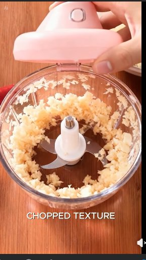
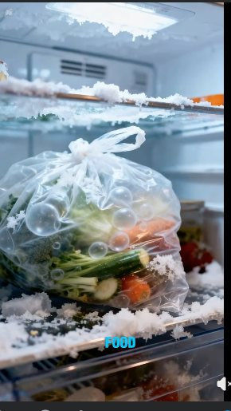
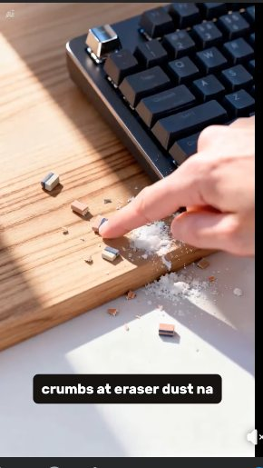

Quality
QA, automation, API validation, and systematic problem-solving.
QA Engineer, AI Video Creator, and Sales Researcher combining technical precision, creative execution, and clear communication.
QA Engineer • AI Video Creator • Sales Research
QA Engineer•AI Video Creator•Sales Research
My foundation is quality engineering and software testing — automation, embedded systems, troubleshooting, and data-driven validation. That discipline shapes how I work: understand the problem, validate the details, and deliver with purpose.
I apply the same mindset to AI video creation and sales research — from short-form scripting and editing to prospect research, ICP matching, lead qualification, and outreach preparation.
QA, automation, API validation, and systematic problem-solving.
AI-assisted short-form video, scripting, storyboarding, and editing.
Prospect research, ICP matching, lead qualification, and outreach preparation.
Different disciplines. One approach: understand, improve, deliver.
Engineering, creative, and research tools I use across QA, content production, and remote collaboration.
Testing, automation, APIs, embedded systems, and release workflows.
AI-assisted scripting, video production, editing, and publishing.
Prospect research, documentation, reporting, and remote collaboration.
Workflow first. Tool second.
Real QA case studies, published affiliate reels, and a structured sales-research workflow.
Owned features from requirements review through test planning, execution, defect triage, and release readiness across web and Android.
Keep requirements testable and releases stable across browsers, devices, APIs, and sprint changes.
Test planning, BrowserStack/TestRail, Postman, JIRA triage, and Agile reviews.
Clearer release readiness and earlier identification of untestable stories.
Migrated a legacy JavaScript test suite to a more maintainable TypeScript framework.
Rewrote Android VTS cases in PyTest and supported remote automotive infotainment test environments.

▶ 01
▶ 02
▶ 03Recommendations shared publicly on LinkedIn.
AI-assisted affiliate content built through product research, scripting, scene planning, AI generation, editing, and publishing.
Selected roles that shaped my QA, automation, and embedded engineering experience.
Automation scripting, test-environment troubleshooting, model-based test design, and result analysis across enterprise delivery.
Led infotainment automation, configured remote test environments, ran endurance/performance testing, and converted Android VTS cases to PyTest.
Own feature QA from planning through release readiness, including BrowserStack validation, Postman API testing, JIRA triage, and TypeScript automation.
Open to remote roles and projects in QA & Software Testing, AI Video Creation, and Sales Research / Lead Generation. If there’s a fit, let’s talk.